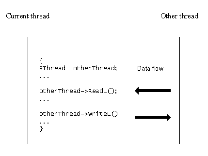

|
| |
Data can be passed between threads. The threads can be in the same process or in different processes.
The mechanism for copying data between threads is called inter-thread
data transfer and is handled by the four functions provided by the
RThread handle:
ReadL()
WriteL()
GetDesLength()
GetDesMaxLength()
The functions are used in the implementation of the
RMessage class which, in turn, is used for passing information
between clients and servers.
The ReadL() and WriteL() functions, which
transfer data, assume that both source and target data are descriptors.
Typically, code executing in the current thread will have a handle to
another thread. The code in the current thread copies data
from the other thread, represented by an
RThread handle, by calling its ReadL() function.
Copying data to the other thread is similar, but
is done using the WriteL() function. The following diagram
illustrates this:

The source or target location in the other thread is identified by pointer. The pointer only has meaning within the context of that thread; attempting to reference the pointer directly from within the current thread is meaningless and may cause an exception.
Copyright ©2002 Symbian Ltd. 6.1-00174 |
|